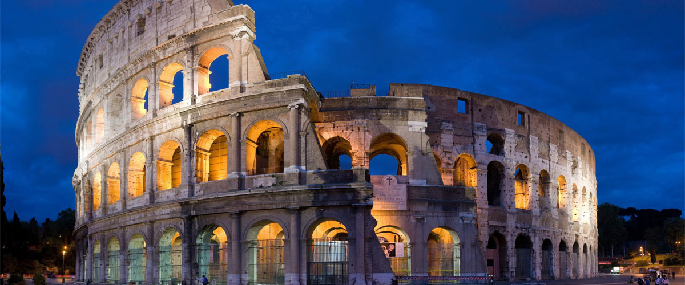
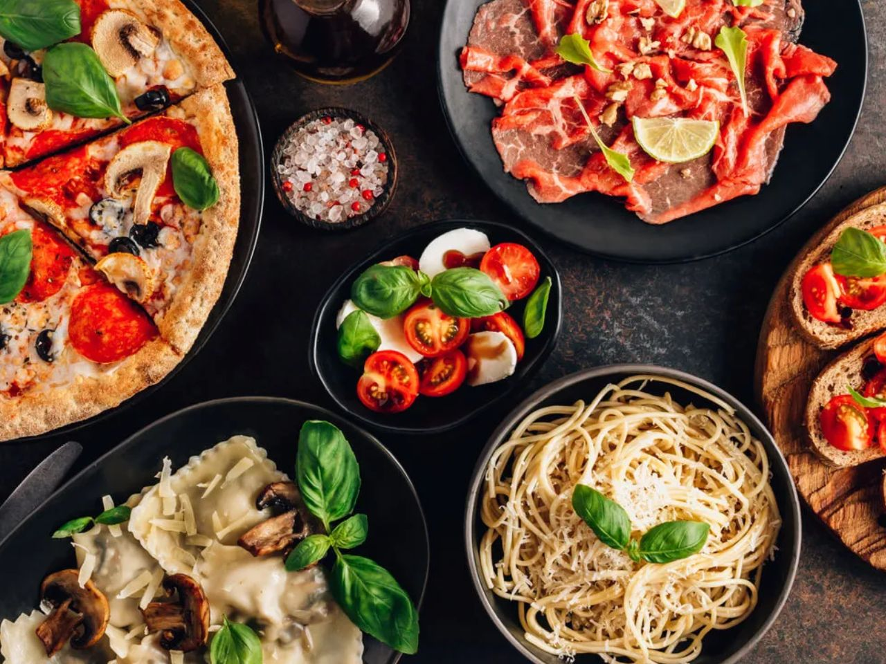

A Itália é um país com uma história rica e milenar, que remonta ao Império Romano. Foi um dos centros mais importantes do Renascimento.
Veja também pontos turísticos famosos
A Itália é referência mundial em moda, arte, música e arquitetura. Grandes artistas como Leonardo da Vinci e Michelangelo são italianos.

Descubra mais sobre a gastronomia
A culinária italiana é uma das mais famosas do mundo, com pratos como pizza, massas e risotos. Cada região tem especialidades únicas.
Como se diz "Bom apetite" em italiano?
→ Buon appetito!

A Itália abriga locais icônicos como o Coliseu, a Torre de Pisa e os canais de Veneza. É um dos países mais visitados do mundo.
| Informações sobre a Itália | ||||
|---|---|---|---|---|
| População | Área | Moeda | Idioma | Capital |
| ~59 milhões | 301.340 km² | Euro | Italiano | Roma |